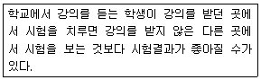
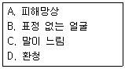
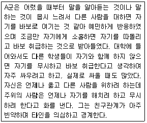
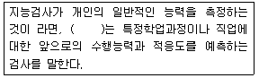
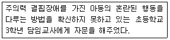
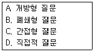
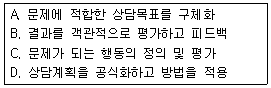

임상심리사-2급 (2011-06-12 기출문제)
1과목: 심리학개론
1. Fishbein의 합리적 행위이론(Reasoned Action Theory) 에 의하면 행위의도는 행위에 대한 태도(AB)와 무엇 에 의해 결정된다고 하는가?
- 주관적 사회규범(SN)
- 주위 사람의 뜻에 동조하려는 동기(MC)
- 행위로 인해 얻게 될 보상(b)
- 자신이 가치롭다고 생각하는 속성(NB)
(정답률: 57%)

2. 다음 중 기억정보가 아날로그 방식으로 표상됨을 나타내는 예는?
- 심적회전
- 마디(Node)와 연결로(Link)
- 디지털 컴퓨터
- 명제
(정답률: 70%)
3. 다음이 설명하는 개념은?

- 처리수준모형
- 부호화특정원리
- 재인기억
- 우연학습
(정답률: 73%)
4. 자극추구(Sensation-Seeking) 성향에 관한 설명으로 옳은 것은?
- Eysenck는 자극추구성향에 관한 척도를 제작했다.
- 자극추구 성향이 높을수록 노어에피네프린(NE)이라는 신경전달물질을 통제하는 체계에서의 흥분수준이 낮다는 주장이 있다.
- 성격특성이 일부 신체적으로 유전된다고 하는 주장을 반박하는 근거로 제시된다.
- 내향성과 외향성을 구분하는 생리적 기준으로 사용된다.
(정답률: 73%)
5. Carl Rogers의 성격이론에서 심리적 적응에 가장 중요한 역할을 한다고 가정하는 것은?
- 자아강도(ego strength)
- 자기(self)
- 자아이상(ego ideal)
- 인식(awareness)
(정답률: 84%)
6. 다음 중 온도나 지능검사의 점수를 측정할 때 사용되는 척도는?
- 명목척도
- 서열척도
- 등간척도
- 비율척도
(정답률: 84%)
7. Piaget의 인지 발달 이론 단계 중 전조작기 단계의 아동이 보이는 사고의 주된 특징은?
- 대상영속성 개념의 결핍
- 감각운동 도식에 의해 세상 이해
- 자아중심성
- 부분-전체 관계에 대한 통찰
(정답률: 76%)
8. 다음 중 성격이론에 대한 설명으로 틀린 것은?
- Allport: 성격은 과거 경험에 의해 학습된 행동성향으로, 상황이 달라지면 행동성향도 변화한다.
- Cattell: 특질을 표면특질과 근원특질로 구분하고, 자료의 통계 분석에 근거하여 16개의 근원 특질을 제시했다.
- Rogers: 현실에 대한 주관적 해석 및 인간의 자기실현과 성장을 위한 욕구를 강조했다.
- Freud: 본능적인 측면을 지나치게 강조하여 사회환경적 요인을 상대적으로 경시했다.
(정답률: 79%)
9. 다음 중 기억에서 입력된 정보 속성의 유사성에 따라서 망각이 일어나는 것은?
- 쇠퇴
- 대치
- 인출실패
- 간섭
(정답률: 70%)
10. 다음 중 고전적 조건형성과 관계가 없는 것은?
- Pavlov의 개의 소화과정 연구
- 고차적 조건형성
- 자극일반화와 변별
- 미신적 행동과 학습된 무력감
(정답률: 77%)
11. 다음 중 의미망 모형에 관한 설명으로 틀린 것은?
- 많은 정보들은 의미망으로 조직화할 수 있고 의미망은 노드(node)와 통로(pathway)로 구성되어 있다.
- 모형의 가정을 어휘결정과제로 검증할 수 있다.
- 이 모형에 따르면 버터가 단어인지를 판단하는데 걸리는 시간은 간호원보다 빵이라는 단어가 먼저 제시되었을 때 더 느리다.
- 활성화 확산 과정으로 설명할 수 있다.
(정답률: 76%)
12. Kohlberg의 도덕적 발달단계에서 인습적 수준에 해당하는 단계는?
- 보상지향단계
- 상호조화를 지향하는 단계
- 벌 및 복종 지향 단계
- 보편적인 도덕원리 지향
(정답률: 54%)
13. 집단으로 일을 수행할 때, 혼자 일할 때보다 더 적은 노력을 들이는 현상은?
- 사회적 촉진
- 사회적 동조
- 집단적 극화
- 사회적 태만
(정답률: 87%)
14. 정신분석에 대한 설명으로 틀린 것은?
- Freud는 정신결정론과 무의식적 동기를 강조한다.
- Jung은 집단무의식의 중요한 구성요소를 원형이라 가정한다.
- Adler는 생물학적 측면보다는 사회적 요인이 성격에 미치는 영향을 강조한다.
- 적응적인 성격이란 3가지 성격요소 중 어느 한 요소가 지배적이고 다른 두 요소가 조화를 이루는 경우이다.
(정답률: 79%)
15. 성취행동에 대한귀인유형 중 내부적이면서 불안정 한 것은?
- 과제 난이도
- 능력
- 운
- 노력
(정답률: 67%)
16. 다음 중 모집단의 범위와 변산도를 가장 잘 성명하는 통계방법은?
- 평균편차
- 범위
- 표준편차
- 상관계수
(정답률: 77%)
17. 하나를 보면 열을 안다는 속담처럼 타인을 지각할 때 내적으로 일관되게 평가하는 경향은?
- 후광효과
- 긍정적 편파
- 자기이행적 예언
- 단순접촉효과
(정답률: 72%)
18. 아동기의 애착에 관한 설명으로 옳은 것은?
- 유아가 엄마에게 분명한 애착을 보이는 시기는 생후3~4개월경부터이다.
- 엄마와의 밀접한 신체접촉이 애착을 형성하는데 가장 중요한 역할을 한다.
- 애착은 인간 고유의 현상으로서 동물들에게는 유사한 현상을 찾아보기 어렵다.
- 안정적으로 애착된 아동들은 엄마가 없는 낯선 상황에서도 주위를 적극적으로 탐색한다.
(정답률: 93%)
19. 설득은 어떤 사람의 명시적인 요청에 대한 반응으로 일어나는 행동변화인데, 다음 중 설득을 일으키는 기법이 아닌 것은?
- 문간에 발 들여놓기 효과(foot-in-the-door effect)
- 인지부조화이론(cognitive dissonance theory)
- 낮은 공 절차(lowball procedure)
- 면전에서 문 닫기 효과(door-in-the-face effect)
(정답률: 84%)
20. 임상심리학 연구방법 중 내담자와의 면접을 통해 증상과 경과를 체계적으로 연구하는 방법은?
- 실험연구
- 상관연구
- 사례연구
- 혼합연구
(정답률: 83%)
2과목: 이상심리학
21. 외상적 사건에 대한 기억과 연관된 불안을 감소시키는데 초점을 맞추고 있으며, Foa에 의해 개발된 이후 외상 후 스트레스 장애에 대해 경험적으로 지지된 치료로서 학계로부터 널리 인정을 받고 있는 치료법은?
- 불안조절 훈련
- 안구운동 둔감화와 재처리 치료
- 지속노출치료
- 인지적 처리치료
(정답률: 65%)
22. 행동주의적 견해에 따르면 강박행동은 어떤 원리에 의해 유지되는가?
- 고전적 조건형성
- 부적 강화
- 소거
- 모델링
(정답률: 69%)
23. 다음 중 정신분열증의 하위유형에 해당하지 않는 것은?
- 미정형
- 중복형
- 긴장형
- 망상형
(정답률: 39%)
24. 자폐성장애는 아동기에 발병하는 정신분열증과 어떻게 다른가?
- 자폐성장애아는 사회적으로 철회되어 있고 부적절한 정동 상태를 보인다.
- 정신분열 아동들은 종종 정신지체도 보인다.
- 자폐성장애아는 망상과 환각을 보이지 않는다.
- 아동기에 발병하는 정신분열증은 없다.
(정답률: 74%)
25. 출생 후 2년 동안은 정상적인 발달이 이루어지다가 그 후에는 자폐증과 유사한 증상을 나타내는 아동기 정신장애는?
- 아스퍼거 장애
- 주의력 결핍 및 과잉행동 장애
- 소아기 붕괴성 장애
- 뚜렛 장애
(정답률: 66%)
26. 다음 중 노출증(Exhibitionism)에 관한 설명으로 틀린 것은?
- 성도착적 초점은 낯선 사람에게 성기를 노출시키는 것이다.
- 성기를 노출시켰다는 상상을 하면서 자위행위를 하기도 한다.
- 보통 18세 이전에 발생하며, 40세 이후에는 상태가 완화되는 것으로 보인다.
- 노출증적 행동을 나타내는 경우에 대개 낯선 사람과 성행위를 하려고 시도한다.
(정답률: 73%)
27. 정신분석학적 관점에서 볼 때 해리성 장애 환자들에게서 가장 흔히 나타나는 방어기제는?
- 억압
- 반동형성
- 전치
- 주지화
(정답률: 77%)
28. 범불안장애를 보이는 사람의 인지적 특징과 가장 거리가 먼 것은?
- 잠재적 위험에 예민하다.
- 잠재적 위험이 발생할 확률을 높게 평가한다.
- 타인으로부터 이용당할 가능성에 민감하다.
- 사건이 발생할 경우 자신의 대처능력을 과소평가한다.
(정답률: 81%)
29. “외모가 중요해”, “나는 언제나 다른 사람의 주의를 끌어야 해”, “감정은 즉각적으로 직접 표현해야 해” 등과 같은 인지도식을 가진 성격장애는?
- 편집성 성격장애
- 히스테리성 성격장애
- 자기애성 성격장애
- 강박성 성격장애
(정답률: 61%)
30. 다음 중 정신분열병의 음성증상의 예를 모두 짝지은 것은?

- A, B
- B, C
- C, D
- A, B, C
(정답률: 75%)
31. 정신지체 아동에 대한 적합한 치료전략과 가장 거리가 먼 것은?
- 가벼운(mild) 수준의 지체 아동은 9세 경에 자신의 몸치장을 할 수 있고 이웃 사람들과 일상적인 대화를 할 수 있는 수준의 교육훈련 목표를 세운다.
- 중간(moderate) 수준의 지체아동은 15세 경에 식사와 목욕을 혼자 할 수 있을 정도의 교육훈련 목표를 세운다.
- 심한(severe) 수준의 지체아동은 15세 경에 혼자서 식사를 하고 옷을 입을 수 있는 수준의 교육훈련 목표를 세운다.
- 극심한(profound) 수준의 지체아동은 15세 경에 혼자서 식사를 하고 작은 단추와 지퍼를 제외한 옷을 입을 수 있는 정도의 교육훈련 목표를 세운다.
(정답률: 39%)
32. 다음 인지장애 중 DSM-Ⅳ의 치매 진단 기준에 해당 되지 않는 것은?
- 실행증(apraxia)
- 실어증(aphasia)
- 실인증(agnosia)
- 섬망(delirium)
(정답률: 66%)
33. 여성의 알코올 중독에 관한 설명으로 옳은 것은?
- 알코올 중독의 남녀 비율은 비슷한 수준이다.
- 여성은 유전적으로 남성보다 알코올 중독의 가능성이 더 높다.
- 여성 알코올 중독자들은 남성 알코올 중독자들보다 우울을 더 많이 경험하고 자살시도 횟수가 더 많다.
- 여성은 남성보다 체지방이 많기 때문에 술의 효과가 늦게 나타나고 대사가 빠르다.
(정답률: 82%)
34. 다음과 같은 증상의 진단으로 가장 적합한 정신장애는?

- 정신병질
- 편집성 성격장애
- 기분장애
- 사회공포증
(정답률: 94%)
35. 다음 중 삼환식 항우울제의 부작용이 아닌 것은?
- 입이 마름
- 변비
- 시야 흐림
- 체중감소
(정답률: 53%)
36. 기분장애의 “카테콜라민(catecholamine) 가설”의 설명으로 옳은 것은?
- 정신분열증이 도파민의 부족에 기인한다는 입장
- 우울증이 노어에피네프린의 부족에 기인한다는 입장
- 우울증이 생물학적 및 환경적 원인의 상호작용에 기인한다는 입장
- 조증이 세로토닌의 증가에 기인한다는 입장
(정답률: 60%)
37. 다음 중 자폐증의 주요증상이 아닌 것은?
- 사회적 상호작용에서의 질적인 장애
- 과잉행동과 충동성
- 의사소통에서의 질적인 장애
- 행동이나 관심에서의 반복적이며 상동적인 증상
(정답률: 84%)
38. 다음 중 정신분열증 발병의 원인으로서 도파민 가설을 지지하는 증거가 아닌 것은?
- 도파민 억제제들이 정신분열증 치료에 효과가 있다.
- 정신분열증 치료약물들이 도파민 부족이 원인으로 알려진 Parkinson씨 병 증상을 일으킨다.
- 파킨슨씨병 치료약물인 L-Dopa가 어떤 사람들에겐 정신분열증과 유사한 증상을 일으킨다.
- 도파민을 활성화시키는 Amphetamine이 정신분열증 환자들의 증상을 완화시킨다.
(정답률: 60%)
39. 다음중 반항성장애(Oppositional Defiant Disorder)로 진단 받은 아동에게서 관찰할 수 있는 행동은?
- 자신도 모르게 쉴 사이 없이 눈을 깜빡거리거나 일정한 몸짓을 하며 때로는 괴상한 소리를 내기도 한다.
- 엄마와 떨어지는 것에 대한 불안으로 학교 가기를 거부한다.
- 사회적으로 정해진 규칙을 위반하거나 타인의 권리를 침해한다.
- 어른들과 논쟁을 하고 쉽게 화를 낸다.
(정답률: 77%)
40. 성기능 장애의 하나로서 남성이 사정에 어려움을 겪으며 성적 절정감을 느끼지 못하는 장애는?
- 조루증
- 지루증
- 남성 발기장애
- 성교 통증장애
(정답률: 85%)
3과목: 심리검사
41. 시각-공간적 기능손상이 있는 뇌손상 환자에게 특히 어려운 과제는?
- 산수문제
- 빠진 곳 찾기
- 차례 맞추기
- 토막 짜기
(정답률: 80%)
42. 다음 중 실행적 기능(executive function)을 담당하는 뇌 부위가 손상된 환자의 평가결과와 가장 거리가 먼 것은?
- 벤더도형검사(BGT)에서 도형의 배치 순서를 평가하는 항목의 점수가 유의하게 낮다.
- 웩슬러 지능검사에서 차례맞추기 소검사의 점수가 유의하게 낮았다.
- Stroop test의 간섭시행 단계에서 특히 점수가 낮았다.
- 웩슬러 지능검사에서 기본지식 소검사의 점수가 유의하게 낮았다.
(정답률: 79%)
43. 다음 중 성격검사의 구성타당도를 평가하는 방법과 가장 거리가 먼 것은?
- 성격검사의 요인을 분석한다.
- 다른 유사한 성격을 측정하는 검사와의 상관을 구한다.
- 관련 없는 성격을 측정하는 검사와의 상관을 구한다.
- 전문가들로 하여금 검사 내용을 판단하게 한다.
(정답률: 62%)
44. MMPI를 해석하는데 있어서 피검자의 검사태도 및 프로파일의 타당도를 알아보기 위해 고려해야 할 사항과 가장 거리가 먼 것은?
- 검사 수행에 걸린 시간
- 무응답의 개수
- F 척도의 상승도
- Pa 척도의 변화폭
(정답률: 79%)
45. 심리평가를 위한 면담기법 중 비구조화된 면담 방식의 장점에 해당하는 것은?
- 면담자 간의 진단 신뢰도를 높일 수 있다.
- 연구 장면에서 활용하기가 용이하다.
- 중요한 정보를 깊이 있게 탐색할 수 있다.
- 점수화하기에 용이하다.
(정답률: 92%)
46. 다음 중 MMPI 코드 쌍의 해석적 의미로 틀린 것은?
- 4-9 : 행동화적 경향이 높다.
- 1-2 : 다양한 신체적 증상에 대한 호소와 염려를 보인다.
- 2-6 : 전환증상을 나타낼 경우가 많다.
- 3-8 : 사고가 본질적으로 망상적일 수 있다.
(정답률: 67%)
47. 다음 중 베일리 발달척도(BSID-Ⅱ)를 구성하는 하위 척도가 아닌 것은?
- 정신척도(mental scale)
- 사회성 척도(social scale)
- 행동평정척도(behavior rating scale)
- 운동척도(motor scale)
(정답률: 66%)
48. 동일한 사람에게 교육 수준이나 환경의 영향, 질병의 영향등과 같은 모든 가외 변인을 통제한 상태에서 20세, 30세, 40세 때 편차 점수를 사용하는 동일한 지능검사를 실시하였다면 지능이 어떻게 나타날 것인가?
- 점진적인 저하가 나타난다.
- 30세 때 까지 상승하다가 그 이후 저하된다.
- 점진적인 상승이 나타난다.
- 변하지 않는다.
(정답률: 65%)
49. 조직에서 직원을 선발할 때 적성검사를 사용하는 경우, 적성검사의 준거관련타당도는 어떻게 구하는 것이 가장 바람직한가?(오류 신고가 접수된 문제입니다. 반드시 정답과 해설을 확인하시기 바랍니다.)
- 적성검사와 직원이 입사 후 이들의 직무수행점수와의 상관을 구한다.
- 적성검사와 다른 선발용 검사와의 상관을 구한다.
- 적성검사의 요인을 분석한다.
- 적성검사의 내용을 전문가들이 판단하도록 한다.
(정답률: 78%)
50. MMPI 임상척도 중 점수가 지나치게 하강하는 경우도 점수가 상승하는 것과 같은 의미로 해석하기도 하는 척도는?
- 척도 2
- 척도 4
- 척도 6
- 척도 8
(정답률: 58%)
51. 문장완성검사(senstence completion test : SCT)에 관한 설명으로 가장 적합한 것은?
- 심사숙고하여 떠오르는 생각을 기록하도록 해야 한다.
- 인격 심층에 관한 정보를 알 수 있는 검사이다.
- 완성되지 않은 문장을 완성하도록 되어 있는 투사검사중의 하나이다.
- 상상력과 창의력을 알아볼 수 있는 검사이다.
(정답률: 87%)
52. 다음 중 Guilford의 지능구조 입체모형설의 구성내용에 포함되지 않는 것은?
- 내용(content)
- 소산(product)
- 조작(operation)
- 파지(retention)
(정답률: 61%)
53. 다음 ( ) 안에 들어갈 알맞은 것은?

- 창의성 검사
- 성취도 검사
- 적성검사
- 발달검사
(정답률: 88%)
54. 다음 중 BGT(Bender Gestalt Test)의 장점에 관한 설명으로 틀린 것은?
- 적절하게 말할 수 있는 능력이 없거나, 말할 수 있는 능력은 있으나 얘기를 하기 싫어할 때 유용하다.
- 피검자가 말로 의사소통할 능력이 충분히 있더라도 언어적 행동으로 성격의 강점과 약점에 관한 정보를 얻기 힘들 때 유용하다.
- 뇌기능에 장애가 있는 피검자에게 유용하다.
- 자기 자신을 과장되게 표현하려는 피검자에게 유용하다.
(정답률: 66%)
55. 다음 중 Wechsler가 제시한 지능의 정의에 해당되는 것은?
- 지능은 판단하고 이해하고 추론하는 능력이다.
- 지능은 목표를 가지고 행동하고 합리적으로 사고하며, 환경을 효과적으로 다룰 수 있는 능력의 집합이다.
- 지능은 유전자에 의해 전수되는 타고난 능력이다.
- 사회문화적 경험이나 조건 형성된 능력으로써 적응능력을 말한다.
(정답률: 66%)
56. 다음 중 뇌손상으로 인해 기능이 떨어진 환자를 평가하고자 할 때 흔히 부딪힐 수 있는 환자의 문제와 가장 거리가 먼 것은?
- 시력장애
- 주의력 저하
- 동기저하
- 피로
(정답률: 83%)
57. 다음 중 MMPI에서 F 척도가 매우 높을 때의 가능한 해석과 가장 거리가 먼 것은?
- 전형적인 신경증 증상
- 무선적인 반응
- 심한 정서적 혼란
- 부정 왜곡 경향
(정답률: 35%)
58. 개인용 지능검사(K-WAIS)에서 편차 지능지수(deviation IQ)에 대한 설명 중 틀린 것은?
- 편차지능지수는 모집단의 평균을 100, 표준편차를15로 규정한 정상분포곡선상의 표준점수이다.
- 어느 개인의 편차지능지수가 100이라면, 지능수준으로 볼 때, 그 개인은 동일 연령의 모집단 내에서 중간 정도의 위치에 있다.
- 평균을 100, 표준편차를 15로 규정한 편차지능지수인 경우, IQ 70은 표준편차 -2의 위치에 해당되는 지능지수이다.
- 편차지능지수 100을 다른 표준점수로 환산한다면, Z점수로는 1, T점수로는 50에 각각 해당된다.
(정답률: 52%)
59. K-WAIS에서 어휘검사의 측정내용으로 옳은 것은?
- 일반 지능의 주요 지표
- 개인이 소유한 기본 지식의 정도
- 수 개념의 이해와 주의 집중력
- 사물의 본질과 비본질을 구분하는 능력
(정답률: 37%)
60. 다음 중 성취도 검사의 일종인 기초학습기능검사가 평가하기 어려운 영역은?
- 독해력
- 공간추론 능력
- 계산 능력
- 철자법 능력
(정답률: 63%)
4과목: 임상심리학
61. 다음과 같은 자문의 유형은?

- 내담자 중심 사례 자문
- 프로그램 중심 행정 자문
- 피자문자 중심 사례 자문
- 피자문자 중심 행정 자문
(정답률: 59%)
62. 면접 시 임상가가 어떻게 질문을 하느냐에 따라 내담자로부터 유용한 정보를 얻을 수 있느냐가 결정된다. 다음의 질문형태 중 내담자로부터 많은 정보를 얻어내는데 효과적인 질문방식으로만 짝지어진 것은?

- A, B
- A, C
- B, C
- B, D
(정답률: 80%)
63. 정신건강전문가인 정신과 의사, 간호사, 사회복지사의 역할과는 구분되는 임상심리학자만의 전통적 역할로 강조되는 것은?
- 심리치료 및 상담
- 심리검사를 통한 평가
- 정신질환에 관한 예방적 노력
- 개인 개업 또는 집단 개업
(정답률: 80%)
64. 다음 중 심리치료에 관한 연구결과로 옳은 것은?
- 모든 문제들은 똑같이 치료가 어렵다.
- 장기치료와 단기치료의 치료효과의 차이규명은 어렵다.
- 사회경제적 지위나 교육수준이 치료의 중도탈락을 예언하기는 어렵다.
- 치료자의 기술이 중도탈락을 예언하기는 어렵다.
(정답률: 56%)
65. 다음 중 자문의 특징에 대한 설명으로 옳은 것은?
- 자문가와 피자문자의 관계는 임의적이다.
- 자문가는 자문을 요청한 기관과 관련이 있다.
- 자문가는 피자문자의 기능적 역량에 중점을 둔다.
- 자문가는 피자문자를 대신하여 내담자를 치료한다.
(정답률: 48%)
66. 심리상담 및 치료의 과정에서 나타나는 현상과 가장 거리가 먼 것은?
- 내담자는 상담자가 아무런 요구 없이 인간으로서의 관심만을 베푼다는 것을 경험한다.
- 상담관계에서 내담자는 처음부터 새로운 방식으로 반응하고 행동하게 된다.
- 상담 장면에서는 일반적이고 추상적인 자료보다는 그 상황에서의 실제행동을 다룬다.
- 치료유형에 차이가 있음에도 불구하고 심리치료에는 공통요인이 작용한다.
(정답률: 46%)
67. 심리검사를 실시하거나 면접을 시행하는 동안 임상심리학자가 취해야 할 태도와 가장 거리가 먼 것은?
- 행동관찰에서는 다른 사람 또는 다른 장면에서는 관찰할 수 없는 비일상적 행동이나 그 환자만의 특징적인 행동을 주로 기술한다.
- 관찰된 행동을 기술할 때에는 어떤 상황에서 어떤 방식으로 불안을 나타내는지를 구체적 용어로 설명하는 것이 바람직하다.
- 정상적인 적응을 하고 있는 사람들도 심리검사와 같은 생소한 상황에 직면할 때는 여러 가지 특징적인 행동을 나타내게 되는데 이러한 일반적인 행동까지 평가보고서에 포함시키는 것이 좋다.
- 평가보고서에는 주로 환자의 특징적인 행동과 심리검사 결과뿐만 아니라 외모나 면접자에 대한 태도, 의사소통 방식, 사고, 감정 및 과제에 대한 반응에서 특징적인 내용까지 포함시키는 것이 좋다.
(정답률: 82%)
68. 임상심리학자로서 지켜야 할 내담자에 대한 비밀보장에 관한 설명으로 틀린 것은?
- 일반적으로 상담과정에서 내담자에 대해 알게 된 사실을 다른 사람들에게 말하면 안 된다.
- 아동 내담자의 경우에도 아동에 관한 정보를 부모에게 알려서는 안 된다.
- 자살 우려가 있는 경우 내담자의 비밀을 지키는 것보다는 가족에게 알려 자살예방 조치를 취하는 것이 더 중요하다.
- 상담 도중 알게 된 내담자의 중요한 범죄사실에 대해서는 비밀을 지킬 필요가 없다.
(정답률: 80%)
69. 심리사회적 또는 환경적 스트레스와 조합된 생물학적 또는 기타 취약성이 질병을 일으킨다는 것은?
- 상호적 유전-환경 조망
- 병적 소질-스트레스 조망
- 사회적 조망
- 생물학적 조망
(정답률: 75%)
70. 임상심리사가 개인적인 심리적 문제를 갖고 있다든지, 너무 많은 부담 때문에 지쳐있다든지, 교만하여 더 이상 배우지 않고 배울 필요가 없다고 생각하거나, 해당되는 특정 전문교육수련을 받지 않고도 특정 내담자군을 잘 다룰 수 있다고 여긴다면, 이는 다음 중 어느 항목의 윤리적 원칙에 위배되는 것인가?
- 유능성
- 성실성
- 권리의 존엄성
- 사회적 책임
(정답률: 65%)
71. 인지치료에서 강조하는 내용과 가장 거리가 먼 것은?
- 내담자로 하여금 자신의 신념들을 파악하게 한다.
- 내담자의 비합리적 생각을 변화시키기 위하여 논리적인 분석을 한다.
- 내담자의 미해결된 과제를 지금-여기서 해결하도록 조력한다.
- 내담자는 자기의 문제를 이해하고 해결할 수 있는 자각 능력과 의식기능을 가지고 있으므로 지시적이고 능동적이며 구조적 접근을 실시한다.
(정답률: 68%)
72. 다음 중 뇌의 편측성 효과를 탐색하는 방법은?
- 뇌파검사
- 동물외과술
- 신경심리검사
- 이원청취기법
(정답률: 72%)
73. 다음 중 인지 -행동적 상담에 관한 설명으로 틀린 것은?
- 공포상황에서의 노출과 같은 행동기법이 인지기법에 동반되어 사용된다.
- 역기능적인 도식과 기대를 기능적으로 수정하는데 치료 목표를 둔다.
- 세계에 대한 개인의 지각과 자신의 경험세계를 강조하여 자기-실현의 추구를 가정한다.
- 자동적 사고의 탐지와 평가가 중요한 초점이 된다.
(정답률: 69%)
74. 다음 중 반응성 효과가 적고 관찰자로 하여금 광범위한 자연 장면에서 행동을 기록할 수 있도록 해주기 때문에 생태학적 타당도를 높일 수 있는 행동평가 방법은?
- 자기-감찰
- 참여관찰
- 비참여관찰
- 행동평가 면접
(정답률: 30%)
75. 뇌의 부위와 행동과의 관계에 관한 설명으로 옳은 것은?
- 우측 측두엽 손상 - 기억, 추리, 판단 등 고차적 인지 기능에 결함
- 변연계의 손상- 주로 시지각과 시각학습에서의 결함
- 전두엽의 손상 - 언어표현의 결함
- 후두엽의 손상- 시각적 공간의 즉각보고의 손상
(정답률: 74%)
76. 신경심리학적 기능을 연구하는 방법 중 비침입적인 방법에 해당하는 것은?
- 양전자방출단층촬영(PET)
- WADA 검사
- 심전극(Depth electrode)
- 뇌파(EEG)
(정답률: 70%)
77. 언어적 기능과 시·공간적 기능을 담당하는 반구 간에 차이가 있는 것을 통해 대뇌 기능의 편재화를 알 수 있다. 다음 중 대뇌 기능의 편재화를 평가하는데 사용하는 검사가 아닌 것은?
- 손잡이(handedness)검사
- 주의력검사
- 발잡이(footedness)검사
- 눈의 편향성 검사
(정답률: 77%)
78. 임상심리학의 역사에 관한 내용으로 틀린 것은?
- Pennsylvania 대학교에 심리진료소를 설립한 것이 임상심리학의 탄생에 결정적 역할을 하였다.
- 1차 세계대전 당시 군인선발을 위한 심리검사의 개발은 임상심리학의 발전에 크게 기여하였다.
- 임상심리학의 임상수련 모델인 과학자-전문가 모형은 Boulder 회의에서 채택되었다.
- 1950년대 이후 항정신병 약물치료제 개발은 가정에 있던 많은 환자들을 정신병원으로 입원시키는 계기가 되었다.
(정답률: 71%)
79. 두뇌 기능의 국재화에 관한 설명으로 옳은 것은?
- Lashley는 국재화 이론에 반론을 제기하였다.
- Broca 영역은 좌반구 측두엽 손상으로 수용적 언어결함과 관련된다.
- Wernicke 영역은 좌반구 전두엽 손상으로 표현 언어결함과 관련된다.
- MRI 및 CT가 개발되었으나 기능 문제 확인에는 외과적 검사가 이용된다.
(정답률: 52%)
80. 다음 중 심리학적 자문의 예로 틀린 것은?
- 만성질환자의 재활을 위한 프로그램
- 자살예방, 강간 및 폭력 후 위기개입
- 약물치료의 정신적 부작용에 대한 정보
- 청소년 성행동과 아동기 비만의 문제
(정답률: 59%)
5과목: 심리상담
81. Bordin이 제시한 작업동맹(working alliance)의 3가지 측면을 바르게 짝지은 것은?
- 작업의 동의, 진솔한 관계, 든든한 유대관계
- 진솔한 관계, 든든한 유대관계, 서로의 호감
- 유대, 작업의 동의, 목표에 동의
- 서로의 호감도, 동맹, 작업의 동의
(정답률: 72%)
82. Glasser의 현실요법상담이론에서 가정하는 기본적인 욕구에 해당하지 않는 것은?
- 생존의 욕구
- 권력에 대한 욕구
- 자존감의 욕구
- 재미에 대한 욕구
(정답률: 73%)
83. 도박중독의 심리·사회적 특징에 대한 설명으로 옳은 것은?
- 도박 중독자들은 대체로 도박에만 집착할 뿐 다른 개인적인 문제를 가지지 않는다.
- 도박 중독자들은 직장에서 도박 자금을 마련하기 위해 남보다 더 열심히 노력한다.
- 심리적 특징으로 단기적인 만족을 추구하기 보다는 장기적인 만족을 추구한다.
- 도박행동에 문제가 있음을 받아들이지 않고 변명하고 논쟁하려 든다.
(정답률: 86%)
84. 정신분석적 상담에서 내적 위험으로부터 아이를 보호하고 안정시켜주는 어머니의 역할처럼, 내담자가 막연하게 느끼지만 스스로는 직면할 수 없는 불안과 두려움에 대해 상담자의 이해를 적절한 순간에 적합한 방법으로 전해주면서 내담자에게 의지가 되어주고 따뜻한 배려로 마음을 녹여주는 활동을 무엇이라고 하는가?
- 버텨주기(holding)
- 역전이(counter transference)
- 현실검증(reality testing)
- 해석(interpretation)
(정답률: 87%)
85. 성폭력 피해자 심리상담 초기단계의 유의사항으로 틀린 것은?
- 치료관계 형성에 힘써야 한다.
- 상담자는 상담 내용의 주도권을 가져야 한다.
- 성폭력 피해로 인한 합병증이 있는지 묻는다.
- 성폭력 피해의 문제가 없다고 부정을 하면 일단 수용해준다.
(정답률: 77%)
86. 다음 중 가장 높은 수준의 공감적 표현방법은?
- 내담자의 표현에 중점을 두어 질문한다.
- 내담자가 표현한 것에 정확한 의미와 정서를 추가한다.
- 이해하기 위해 노력하고 내담자의 단어로 반응한다.
- 내담자의 감정을 정확히 반영한다.
(정답률: 56%)
87. 다음 중 특성-요인 상담의 특징으로 틀린 것은?
- 상담자 중심의 상담방법이다.
- 사례연구를 상담의 중요한 자료로 삼는다.
- 문제의 객관적 이해보다는 내담자에 대한 정서적 이해에 중점을 둔다.
- 내담자에게 정보를 제공하고 학습기술과 사회적 적응 기술을 알려주는 것을 중요시한다.
(정답률: 55%)
88. 자신조차 승인할 수 없는 욕구나 인격특성을 타인이나 사물로 전환시킴으로써 자신의 바람직하지 않은 욕구를 무의식적으로 감추려는 방어기제는?
- 동일화
- 합리화
- 투사
- 승화
(정답률: 64%)
89. 사회공포증 치료에서 극복을 위한 집단치료 프로그램 내용 중 불안을 유발하기 때문에 지금까지 피해왔던 상황을 더 이상 회피하지 않고 그 상황에 직면하게 하는 일종의 행동치료기법은?
- 노출훈련
- 역할연기
- 자동적 사고의 인지재구성 훈련
- 역기능적 신념에 대한 인지재구성 훈련
(정답률: 80%)
90. 다음 중 학습상담의 과정으로 볼 수 없는 것은?
- 현실성 있는 상담목표를 설정해서 상담한다.
- 학습문제와 관련된 내담자의 감정을 이해하고 격려한다.
- 내담자의 장점, 자원 등을 학습상담 과정에 적절히 활용한다.
- 학습문제와 무관한 개인의 심리적 문제는 회피한다.
(정답률: 87%)
91. 다음 중 자조집단과 치료집단에 대한 설명으로 옳은 것은?
- 생활상의 여러 문제들을 다루기에는 치료집단이 더 적절하다.
- 자조집단에서는 변화를 위한 촉진보다는 수용적이고 지지적인 분위기를 제공하는데 관심이 있다.
- 치료집단의 리더로는 집단성원과 동일한 문제로 분투한 사람이 좋다.
- 정신건강과 관련된 심각한 문제는 자조집단이 더 적절하다.
(정답률: 75%)
92. 다음 중 실존주의 상담접근에서 제시한 인간의 기본조건에 해당하지 않는 것은?
- 인간은 누구나 자기인식 능력을 가지고 있다.
- 자신의 정체감 확립과 타인과 의미 있는 관계를 수립한다.
- 인간은 완성을 추구하는 경향이 있다.
- 죽음이나 비존재에 대해 인식한다.
(정답률: 51%)
93. 다음 중 알콜중독자 상담에 대한 설명으로 틀린 것은?
- 가족을 포함하여 타인의 방해를 받지 않기 위하여 비밀리에 상담한다.
- 치료 초기 단계에서 술과 관련된 치료적 계약을 분명히 한다.
- 문제 행동에 대한 행동치료를 병행할 수 있다.
- 치료후기에는 재발가능성을 언급한다.
(정답률: 87%)
94. 인간중심 상담기법에서는 내담자의 심리적 부적응, 부조화된 행동 그리고 이해할 수 없는 행동의 가장 중요한 원인이 어디에서 비롯되는 것으로 보는가?
- 무의식적 갈등
- 자각의 부재
- 현실의 왜곡과 부정
- 자기와 경험 간의 불일치
(정답률: 84%)
95. 다음 중 가족치료의 주된 목표와 가장 거리가 먼 것은?
- 가계의 특징을 파악하고 이를 재구조화 한다.
- 가족들 간의 잘못된 관계를 바로 잡는다.
- 특정 가족원의 문제행동을 수정한다.
- 가족원들 간의 의사소통 유형을 파악하고 의사소통이 잘 되도록 한다.
(정답률: 74%)
96. 사회학습이론의 관점에서 내담자가 직업선택을 효율적으로 할 수 있도록 돕기 위해 상담자가 해야 할 일은?
- 직업에서 요구하는 직무내용은 항상 변화할 수 있음을 예측하고 대비한다.
- 내담자가 행동하도록 격려하는 것은 진로 상담자의 업무 범위가 아님을 인식한다.
- 내담자가 현재의 특성을 벗어나는 직업을 선택하지 않도록 한다.
- 내담자가 제기한 문제 이외의 또 다른 의문을 제기하지 않는다.
(정답률: 66%)
97. 자살방지센터에서 긴급한 자살 상황에 처한 사람으로부터 걸려온 전화를 받는 자원봉사자의 가장 효과적인 행동요령은?
- 점검표(check list)를 앞에 놓고, 전화를 건 사람에게 자세한 질문을 던진다.
- 자살동기를 묻지 않는다.
- 자살계획을 털어놓을 때까지 기다려야 한다.
- 자살하지 말라고 지시한다.
(정답률: 62%)
98. 집단상담자는 집단원이 비생산적 행위를 할 때 이러한 행위를 저지 또는 제한할 수 있다. 집단성원의 비생산적 행위에 해당하지 않는 것은?
- 여러 명이 한 명에게 계속 감정을 표출한다.
- 특정 집단성원에게 개인적 정보를 캐묻는다.
- 자기-드러내기를 시도한다.
- 사회 현상에 대한 자신의 의견을 늘어놓는다.
(정답률: 71%)
99. 우울한 사람들이 보이는 체계적인 사고의 오류 중 결론을 지지하는 증거가 없거나 증거가 결론과 배치되는데도 불구하고 어떤 결론을 이끌어내는 과정을 의미하는 인지적 오류는?
- 선택적 추상화(selective abstraction)
- 과일반화(overgeneralization)
- 개인화(personalization)
- 임의적 추론(arbitrary inference)
(정답률: 82%)
100. 행동주의 집단상담의 절차를 바르게 나열한 것은?

- A → B → C → D
- B → C → A → D
- C → A → D →B
- D → A → C → B
(정답률: 70%)